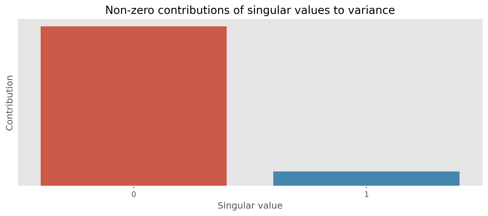
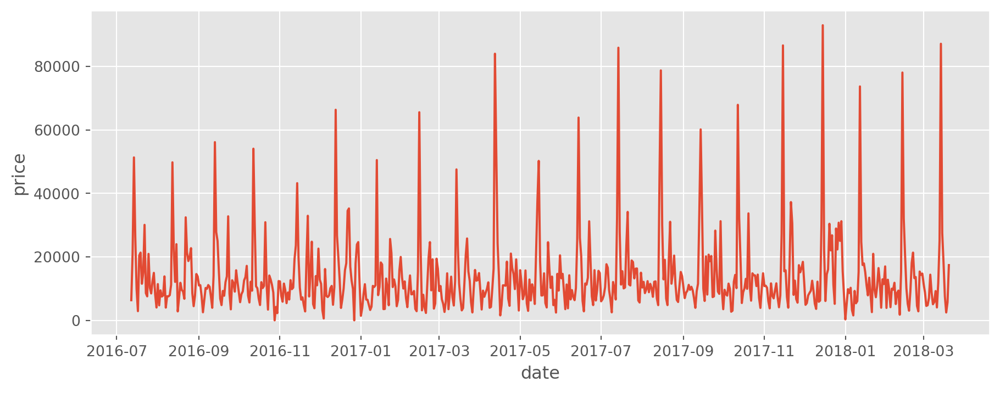
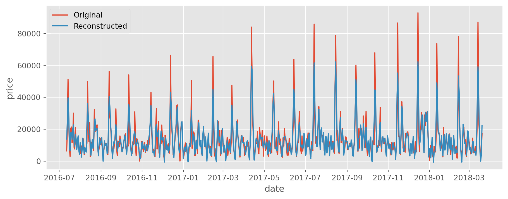

import matplotlib.pyplot as plt
import numpy as np
import pandas as pd
import scipy.linalg
import seaborn as snsIntroduction
In this article, I will talk about Singular Spectrum Analysis (SSA) and its implementation in Python. For the sake of simplicity, I will use the univariate time series and will implement basic SSA without forecasting capability. However, it is not hard to extend this method to multivariate time series and add forecasting capability as well.
In Time Series Analysis (TSA), the technique called Singular Spectrum Analysis (SSA) has been developed to use it for time series decomposition, forecasting, and noise reduction. It is a nonparametric technique, combining some elements of classical time series analysis, multivariate statistics, dynamical systems, and signal processing. Since it is nonparametric, it works with arbitrary statistical processes, whether linear or nonlinear, stationary or non-stationary, Gaussian or non-Gaussian.
Singular Spectrum Analysis
Let dive into the technical details of the SSA. It consists of the two main steps: decomposition and reconstruction. Each above step, in turn, consists of the two sub-steps: embedding followed by singular value decomposition (SVD) and eigentriple grouping followed by diagonal averaging.
Decomposition
At that stage, we have to perform embedding followed by SVD. Let consider following time series: \(\mathbb{X} = (x_{1}, \cdots, x_{N})\) of length \(N\). Now let pick a window size \(L\) and embed the time series into a trajectory matrix of dimension \(L \times K\), where \(K = N - L + 1\):
Window length \(L\) is the only hyper-parameter of the SSA. It is important to choose the right window length, because if the window length is too small, then the result will be noisy, and if the window length is too large, then the result will be too smooth. So, the window length should be chosen carefully.
The trajectory matrix of the series \(\mathbb{X}\) is defined as follows:
\[ \mathbf{X} = \begin{bmatrix} x_1 & x_2 & x_3 & \cdots & x_K \\ x_2 & x_3 & x_4 & \cdots & x_{K+1} \\ x_3 & x_4 & x_5 & \cdots & x_{K+1} \\ \vdots & \vdots & \ddots & \vdots \\ x_L & x_{L+1} & x_{L+2} & \cdots & x_N \end{bmatrix} \]
We can see that, the first column of the trajectory matrix is the original time series up to a length \(L\), the second column is the original time series shifted by one time step, and so on. We also see that our matrix \(\mathbf{X}\) has equal elements \(x_{ij}\) on the anti-diagonals \(i + j = const\). Hence, the matrix \(\mathbf{X}\) is called Hankel matrix.
Instead of implementing Hankel matrix from scratch, we can use scipy to hankelize any given time series. The function below takes time series and window length as input and returns Hankel matrix.
def embed(time_series, window_length):
"""
Embed the time series into a Hankel matrix. This is the trajectory matrix.
"""
K = len(time_series) - window_length + 1
trajectory_matrix = scipy.linalg.hankel(time_series, np.zeros(window_length)).T[:, : K]
return trajectory_matrixLet consider following time series as an example:
time_series = np.array([1, 2, 3, 4, 5, 6, 7, 8, 9, 10])
window_length = 4
trajectory_matrix = embed(time_series, window_length)
trajectory_matrixarray([[ 1., 2., 3., 4., 5., 6., 7.],
[ 2., 3., 4., 5., 6., 7., 8.],
[ 3., 4., 5., 6., 7., 8., 9.],
[ 4., 5., 6., 7., 8., 9., 10.]])The second step is to perform SVD on the trajectory matrix. First, we multiply the trajectory matrix by its transpose to form the matrix \(\mathbf{S} = XX^{T}\) and then perform SVD on the resulting matrix.
For more information how SVD works check my previous blog.
After performing SVD, we get eigenvalues, sorted in decreasing order and left singular vectors of the matrix \(\mathbf{S}\). We’re not interested in the right singular vectors, so we can discard them. For the next step, we also need to calculate the rank \(d\) of the trajectory matrix \(\mathbf{X}\).
The function below takes trajectory matrix as input and returns rank, eigenvalues, and left singular vectors.
def decompose(trajectory_matrix):
"""
Decompose the trajectory matrix into its singular values and vectors.
"""
S = np.matmul(trajectory_matrix, trajectory_matrix.T)
singular_vectors, singular_values, _ = scipy.linalg.svd(S)
singular_values = np.sqrt(singular_values)
rank = np.linalg.matrix_rank(trajectory_matrix)
return rank, singular_values, singular_vectorsnp.set_printoptions(suppress=True) # Suppress scientific notation
rank, singular_values, singular_vectors = decompose(trajectory_matrix)
print("Rank: ", rank)
print("Singular values: ", singular_values, sep="\n")
print("Singular vectors: ", singular_vectors, sep="\n")Rank: 2
Singular values:
[31.46491008 1.98983259 0.0000002 0.00000002]
Singular vectors:
[[-0.37304882 -0.7488889 0.54772256 0.00002067]
[-0.45239454 -0.30877044 -0.73031215 0.40822073]
[-0.53174025 0.13134802 -0.18254338 -0.81650347]
[-0.61108597 0.57146648 0.36513297 0.40826207]]Reconstruction
At that stage, we have to perform eigentriple grouping followed by diagonal averaging. The SVD step of the trajectory matrix is not finished. I split it into two parts for better understanding. The first part was actual decomposition, and the second part is grouping to form elementary matrices.
The function below takes trajectory matrix, rank, eigenvalues, and left singular vectors as input and returns grouped matrices. The rank of each matrix is 1, hence the name elementary matrices. The collection \((\sqrt{\lambda_{i}}, U_{i}, V_i{})\) is called eigentriple of the SVD. Not to be confused with \(V_{i}\). It is not the right singular vector, but the following matrix \(V_{i} = \\ \mathbf{X}^{T}U_{i}/{\sqrt{\lambda_{i}}}\)
def group(trajectory_matrix, rank, singular_values, singular_vectors):
"""
Group the singular values and vectors into matrices.
"""
V = {i: np.matmul(trajectory_matrix.T, singular_vectors[:, i]) / singular_values[i] for i in range(rank)}
# The rank of each matrix is 1
X = {
i: np.matmul(singular_values[i] * singular_vectors[:, i].reshape(-1, 1), V[i].reshape(-1, 1).T)
for i in range(rank)
}
return XX = group(trajectory_matrix, rank, singular_values, singular_vectors)
X{0: array([[ 1.98365074, 2.71791138, 3.45217202, 4.18643267, 4.92069331,
5.65495395, 6.38921459],
[ 2.40556386, 3.29599826, 4.18643267, 5.07686707, 5.96730148,
6.85773588, 7.74817029],
[ 2.82747698, 3.87408514, 4.92069331, 5.96730148, 7.01390964,
8.06051781, 9.10712598],
[ 3.2493901 , 4.45217202, 5.65495395, 6.85773588, 8.06051781,
9.26329974, 10.46608167]]),
1: array([[-0.98365074, -0.71791138, -0.45217202, -0.18643267, 0.07930669,
0.34504605, 0.61078541],
[-0.40556386, -0.29599826, -0.18643267, -0.07686707, 0.03269852,
0.14226412, 0.25182971],
[ 0.17252302, 0.12591486, 0.07930669, 0.03269852, -0.01390964,
-0.06051781, -0.10712598],
[ 0.7506099 , 0.54782798, 0.34504605, 0.14226412, -0.06051781,
-0.26329974, -0.46608167]])}At the diagonal averaging step, each matrix \(\mathbf{X_{I_{j}}}\) of the grouped decomposition is henkelized and then the obtained Hankel matrix is transformed into a new series of length \(N\). Diagonal averaging applied to the resulted matrix \(\mathbf{X_{I_{k}}}\) produces a reconstructed series \(\mathbb{\tilde{X^{(k)}}} = (\tilde{x}^{(k)}_{1}, \cdots, \tilde{x}^{(k)}_{N})\). Therefore, the initial series is decomposed into a sum of \(m\) reconstructed subseries:
\[ x_{n} = \sum_{k=1}^{m} \tilde{x}^{(k)}_{n}, \quad n = 1, \cdots, N \]
The function below takes grouped matrices as input and returns reconstructed time series.
def diagonal_averaging(X, m):
"""
Perform anti-diagonal averaging of the given hankel matrix
"""
if m > len(X):
raise ValueError("Number of singular values cannot be greater than the rank of the trajectory matrix.")
result = []
matrix = np.sum([X[i] for i in range(m)], axis=(0))
rows, columns = matrix.shape
rows_star, columns_star = min(rows, columns), max(rows, columns)
for k in range(1 - columns_star, rows_star):
identity_matrix = np.eye(columns_star, k=k, dtype="bool")[::-1][:rows_star, :]
identity_matrix_sum = np.sum(identity_matrix)
mask = np.ma.masked_array(matrix, mask=1 - identity_matrix)
average = mask.sum() / identity_matrix_sum
result.append(average)
return pd.DataFrame(result).rename(columns={0: "reconstruction"})Here, I pick the first matrix of the grouped decomposition and perform diagonal averaging. The result is a reconstructed time series.
reconstructed_time_series = diagonal_averaging(X, 1)
reconstructed_time_series| reconstruction | |
|---|---|
| 0 | 1.983651 |
| 1 | 2.561738 |
| 2 | 3.191882 |
| 3 | 3.874085 |
| 4 | 4.842606 |
| 5 | 5.811128 |
| 6 | 6.779649 |
| 7 | 7.956402 |
| 8 | 9.185213 |
| 9 | 10.466082 |
Here is the result for the first two matrices. We see that it produces exactly the same series as initial one.
reconstructed_time_series = diagonal_averaging(X, 2)
reconstructed_time_series| reconstruction | |
|---|---|
| 0 | 1.0 |
| 1 | 2.0 |
| 2 | 3.0 |
| 3 | 4.0 |
| 4 | 5.0 |
| 5 | 6.0 |
| 6 | 7.0 |
| 7 | 8.0 |
| 8 | 9.0 |
| 9 | 10.0 |
We can also visualize how much each singular value contributes to the variance.
def plot_contributions(trajectory_matrix, singular_values):
"""View the contribution to variance of each singular value and its corresponding signal"""
lambdas = np.power(singular_values, 2)
norm = np.linalg.norm(trajectory_matrix)
contributions = pd.DataFrame((lambdas / (norm**2)).round(4), columns=["contribution"])
# Filter out the contributions that are zero
contributions = contributions[contributions["contribution"] > 0]
# Adjust the scale of the contributions
contributions["contribution"] = (1 / contributions["contribution"]).max() * 1.1 - (
1 / contributions["contribution"]
)
# Plot the contributions
plt.style.use("ggplot")
plt.figure(figsize=(11, 4))
plt.axes().get_yaxis().set_ticks([])
sns.barplot(data=contributions, x=contributions.index, y="contribution")
plt.title("Non-zero contributions of singular values to variance")
plt.xlabel("Singular value")
plt.ylabel("Contribution")
plt.show()plot_contributions(trajectory_matrix, singular_values)
From the above plot we see that the first singular value contributes the most to the variance. The second singular value contributes less.
Real Life Example
I guess, the above example does not make much sense as it’s not something real. Let consider real life data and go thru all the steps one by one. You can download the data from here.
Let read the data and replicate above steps.
ts = pd.read_csv("TS.csv", parse_dates=True, index_col="date")
plt.style.use("ggplot")
plt.figure(figsize=(11, 4))
sns.lineplot(data=ts, x=ts.index, y="price");
We see that the data is characterized with some seasonality. Due to that reason, we will use a window size of 24.
trajectory_matrix = embed(ts, window_length=24)
trajectory_matrixarray([[ 6345., 20965., 51355., ..., 13655., 4565., 2840.],
[20965., 51355., 26435., ..., 4565., 2840., 15380.],
[51355., 26435., 9830., ..., 2840., 15380., 14340.],
...,
[ 4725., 9435., 7495., ..., 17965., 7505., 2480.],
[ 9435., 7495., 7830., ..., 7505., 2480., 5725.],
[ 7495., 7830., 13850., ..., 2480., 5725., 17405.]])rank, singular_values, singular_vectors = decompose(trajectory_matrix)X = group(trajectory_matrix, rank, singular_values, singular_vectors)reconstructed = diagonal_averaging(X, m=12)
ts["reconstruction"] = reconstructed["reconstruction"].values# Plot original and reconstructed series
plt.style.use("ggplot")
plt.figure(figsize=(11, 4))
sns.lineplot(data=ts, x=ts.index, y="price", label="Original")
sns.lineplot(data=ts, x=ts.index, y="reconstruction", label="Reconstructed");
Conclusion
The result seems quite impressive. The implementation was not hard and the result is quite good. Adding forecasting capability and extending this method to multivariate time series should not be hard. For more detailed information, please refer to the references below.